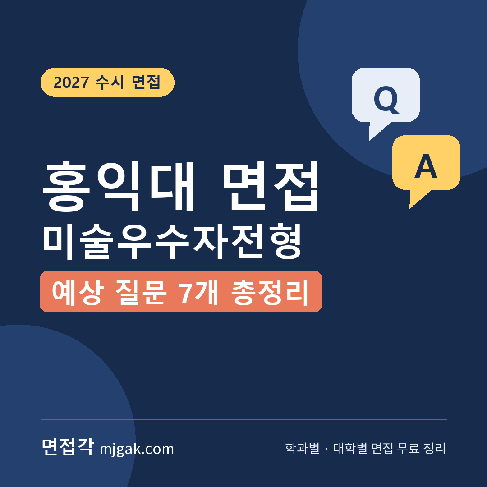
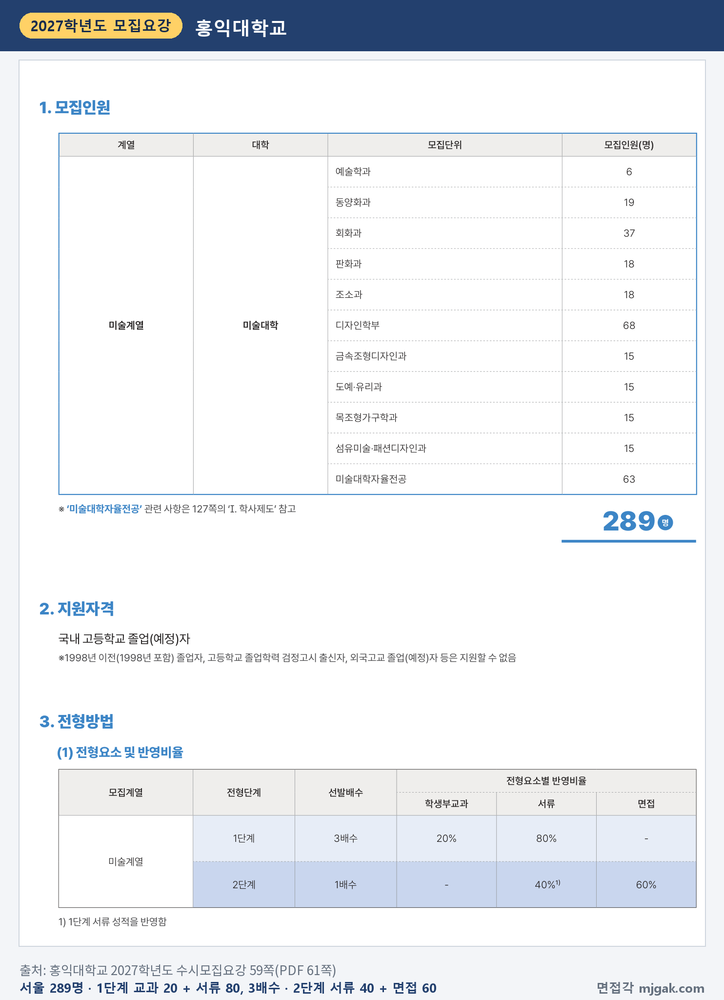
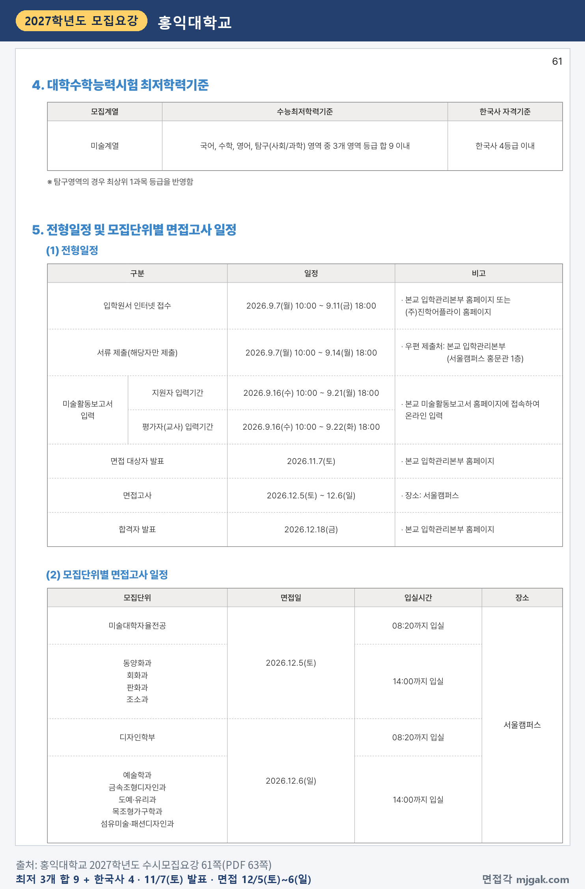
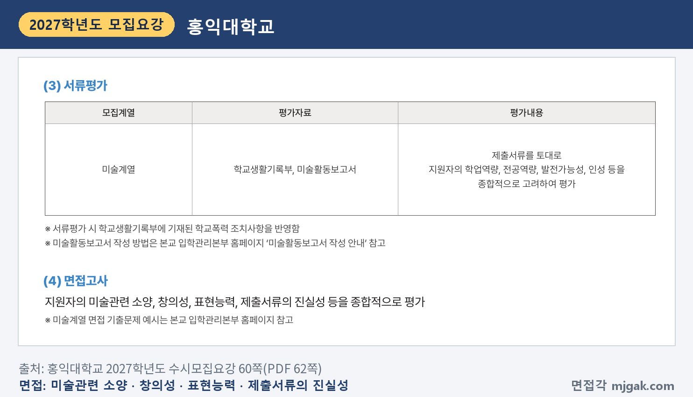
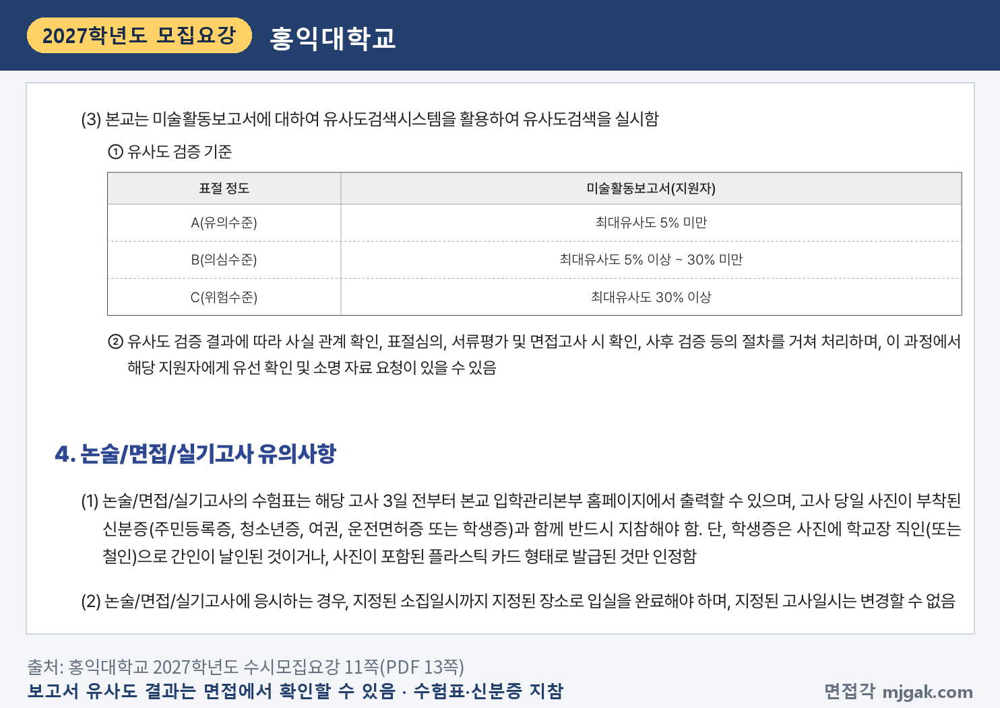
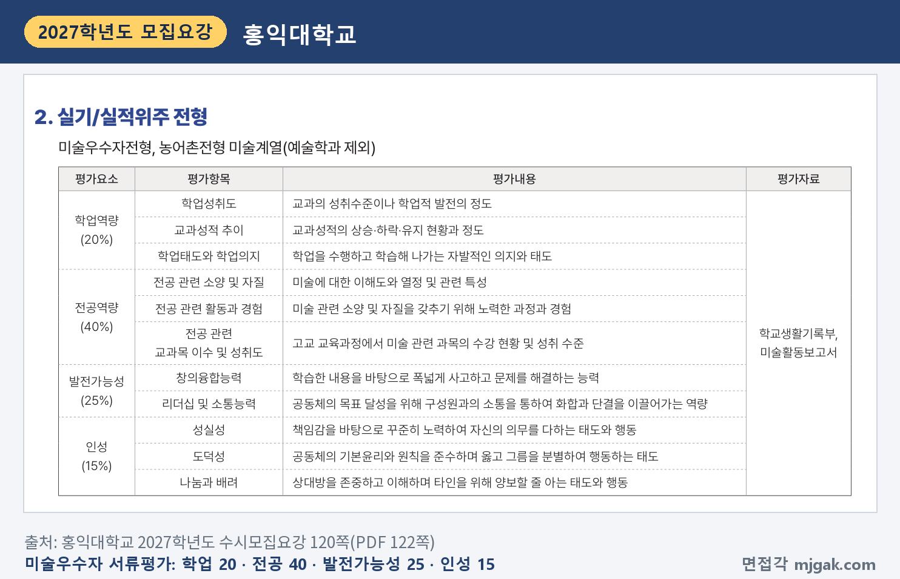
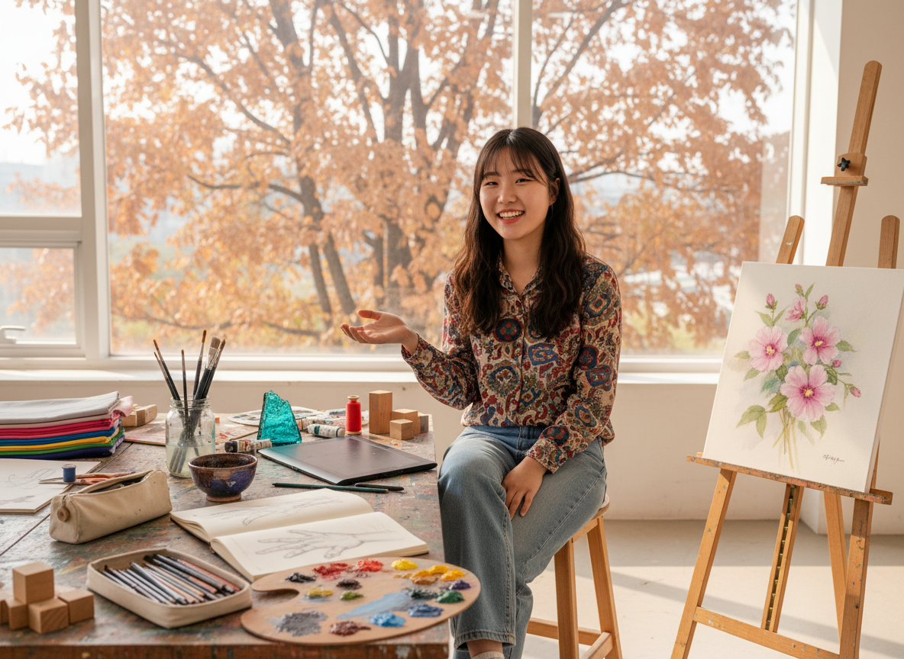
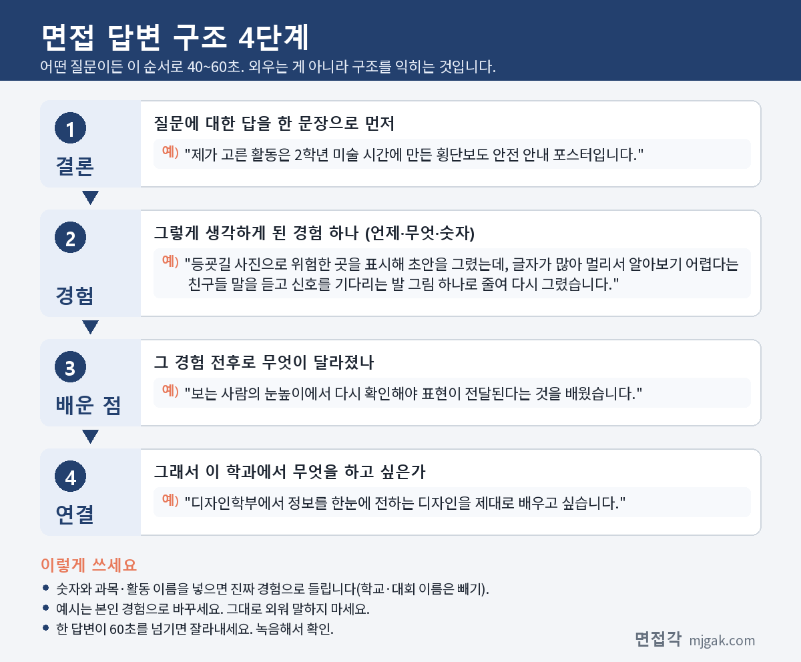
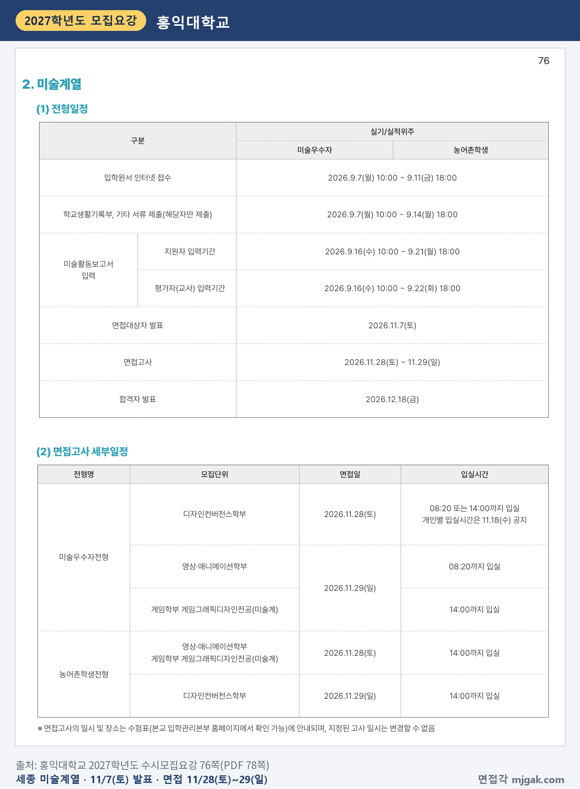
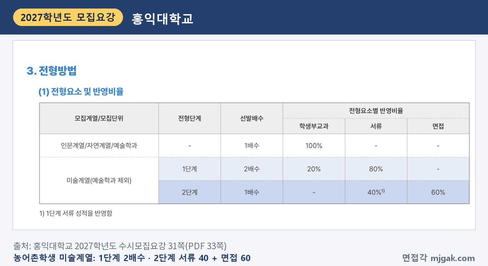

Ctrl+V (서식 유지됨)제목
본문 (이 영역 전체가 복사됩니다)
📷 여기에 이미지 넣기 — 썸네일 — thumb-hongik.png (대표 이미지로 지정)
홍익대 미술우수자전형에서 먼저 챙길 것은 면접대상자 발표가 수능보다 앞선다는 점입니다. 면접대상자 발표는 11월 7일(토), 수능은 11월 19일(목)이고, 면접은 세종캠퍼스가 11월 28일(토)~29일(일), 서울캠퍼스가 12월 5일(토)~6일(일)입니다. 2단계는 1단계 서류 성적 40%와 면접 60%를 합산하고, 전형요소에 실기고사는 없습니다. 모집요강은 면접에서 "미술관련 소양, 창의성, 표현능력, 제출서류의 진실성 등"을 종합적으로 평가한다고 밝혔습니다. 2027학년도 수시모집요강을 바탕으로 서울·세종 미술우수자전형의 전형 방법·일정·면접 평가·예상 질문 7개·준비 순서를 정리했고, 농어촌학생전형 미술계열은 한 문단으로 묶었습니다. 미술우수자전형 지원자를 위한 글입니다.
1. 미술우수자전형, 2027학년도에는 어떻게 보나
서울캠퍼스 미술우수자전형은 실기/실적위주 전형으로 289명을 뽑습니다. 디자인학부 68명, 미술대학자율전공 63명, 회화과 37명, 동양화과 19명, 판화과·조소과 각 18명, 금속조형디자인과·도예·유리과·목조형가구학과·섬유미술·패션디자인과 각 15명, 예술학과 6명입니다(59쪽). 미술대학자율전공 입학생은 미술대학 안의 학과·전공 중 하나를 고를 수 있습니다(128쪽). 지원자격은 국내 고등학교 졸업(예정)자이고, 검정고시 출신자와 외국고교 졸업(예정)자 등은 지원할 수 없습니다(59쪽).
전형 방법은 1단계에서 학생부교과 20%와 서류 80%로 3배수를 뽑고, 2단계에서 1단계 서류 성적 40%와 면접 60%를 합산합니다(59쪽). 이 글에서 모집인원에 3을 곱해 계산하면 디자인학부(68명)는 204명, 회화과(37명)는 111명이 1단계 합격 규모입니다.
📷 여기에 이미지 넣기 — 캡처 1 — 홍익대학교 2027학년도 수시모집요강 59쪽(PDF 61쪽): hongik-2027-seoul-method.png
서울 미술우수자전형에는 수능최저학력기준이 있습니다. 국어, 수학, 영어, 탐구(사회/과학) 중 3개 영역 등급 합 9 이내와 한국사 4등급 이내이고, 탐구는 최상위 1과목을 반영합니다(61쪽). 최저 미달자는 성적과 관계없이 불합격 처리됩니다(12쪽).
2단계 동점자는 면접고사 성적, 서류평가 요소별 성적(전공역량, 발전가능성, 학업역량, 인성 순), 교과점수(국어, 영어 순)로 가립니다(60쪽). 서류평가에서는 학교생활기록부에 적힌 학교폭력 조치사항을 반영합니다(60쪽).
2. 언제 보나: 11월 7일 발표, 서울은 12월 5일·6일
서울캠퍼스 일정(61쪽)과 수능 날짜를 날짜순으로 적으면 이렇습니다.
- 11월 7일(토): 면접 대상자 발표, 입학관리본부 홈페이지
- 11월 19일(목): 수능
- 12월 5일(토): 미술대학자율전공 08:20까지 입실, 동양화과·회화과·판화과·조소과 14:00까지 입실
- 12월 6일(일): 디자인학부 08:20까지 입실, 예술학과·금속조형디자인과·도예·유리과·목조형가구학과·섬유미술·패션디자인과 14:00까지 입실
- 12월 18일(금): 합격자 발표
이 글에서 계산하면 면접대상자 발표에서 12월 5일 면접까지 28일, 수능에서 16일입니다. 면접 수험표는 고사 3일 전부터 입학관리본부 홈페이지에서 출력할 수 있고, 지정된 고사 일시는 바꿀 수 없습니다(11쪽). 면접 결시자는 불합격 처리됩니다(12쪽).
📷 여기에 이미지 넣기 — 캡처 2 — 홍익대학교 2027학년도 수시모집요강 61쪽(PDF 63쪽): hongik-2027-seoul-schedule.png
3. 면접은 어떻게 보나
모집요강의 면접고사 안내는 한 문장입니다. "지원자의 미술관련 소양, 창의성, 표현능력, 제출서류의 진실성 등을 종합적으로 평가"(60쪽). 항목별 배점은 따로 나와 있지 않고, 면접 시간과 면접위원 수도 모집요강에 없습니다. 모집요강은 "미술계열 면접 기출문제 예시는 본교 입학관리본부 홈페이지 참고"라고 안내합니다(60쪽).
📷 여기에 이미지 넣기 — 캡처 3 — 홍익대학교 2027학년도 수시모집요강 60쪽(PDF 62쪽): hongik-2027-interview.png
평가 항목에 "제출서류의 진실성"이 들어 있으니 제출서류가 무엇인지부터 보세요. 서류평가 자료는 학교생활기록부와 미술활동보고서입니다(60쪽). 미술활동보고서는 미술관련 교과활동(최대 7개)과 비교과활동(최대 8개)을 합쳐 12개 이내로 입력하고, 고등학교 입학일 이후부터 원서접수 전까지의 활동만 인정하며, 평가자(원칙적으로 미술교사)의 확인을 받습니다(121·122쪽). 모집요강에 작품이나 포트폴리오를 따로 내라는 안내는 없습니다.
대학은 미술활동보고서에 유사도검색을 하고, 결과에 따라 사실 관계 확인, 표절심의, "서류평가 및 면접고사 시 확인" 등의 절차를 거칩니다(11쪽). 보고서에 부모(친인척 포함)의 실명·직업명·직장명 등 신상정보를 적으면 그 내용을 평가에 반영하지 않습니다(11쪽). 고사 당일에는 수험표와 사진이 붙은 신분증을 반드시 가져가야 하고, 고사 진행 중에 휴대폰·스마트워치 등 전자기기를 지니거나 쓰면 부정행위로 처리됩니다(11쪽).
📷 여기에 이미지 넣기 — 캡처 4 — 홍익대학교 2027학년도 수시모집요강 11쪽(PDF 13쪽): hongik-2027-report-check.png
1단계 서류평가 기준도 같이 보세요. 학업역량 20%, 전공역량 40%, 발전가능성 25%, 인성 15%이고, 전공역량에는 "미술에 대한 이해도와 열정", "미술 관련 소양 및 자질을 갖추기 위해 노력한 과정과 경험"이 들어 있습니다(120쪽).
📷 여기에 이미지 넣기 — 캡처 5 — 홍익대학교 2027학년도 수시모집요강 120쪽(PDF 122쪽): hongik-2027-doc-eval.png
4. 평가 항목에서 나올 예상 질문 7개와 답변법
아래 7개는 대학이 공개한 질문이 아닙니다. 모집요강의 면접 평가 항목 네 가지로 정리한 예상 질문입니다. 대학이 홈페이지에 올린 기출문제 예시는 이 글에 옮기지 않았으니 따로 확인하세요. 예시 답변은 모집단위를 바꿔 가며 쓴 가상의 예시이니 반드시 본인 활동으로 바꾸세요.
▶ 질문 1. 미술활동보고서에 적은 활동 하나를 골라, 직접 한 과정을 설명해 보세요. (제출서류의 진실성)
왜 묻나: 평가 항목에 "제출서류의 진실성"이 있고, 보고서 유사도 검증 결과를 면접에서 확인할 수 있다고 적혀 있습니다(11쪽). 보고서 문장을 내 말로 다시 설명할 수 있는지가 드러납니다.
답변 구조: 활동 이름 한 문장 → 시작한 이유와 첫 시도 → 막힌 점과 바꾼 것 → 배운 점 → 학과 연결.
답변 예시 (디자인학부):
"제가 고른 활동은 2학년 미술 시간에 만든 횡단보도 안전 안내 포스터입니다. 등굣길 사진으로 위험한 곳을 표시해 초안을 그렸는데, 글자가 많아 멀리서 알아보기 어렵다는 친구들 말을 듣고 신호를 기다리는 발 그림 하나로 줄여 다시 그렸습니다. 보는 사람의 눈높이에서 다시 확인해야 표현이 전달된다는 것을 배웠습니다. 디자인학부에서 정보를 한눈에 전하는 디자인을 제대로 배우고 싶습니다."
주의: 보고서 문장을 외워 읽지 마세요. 날짜, 재료, 고친 횟수처럼 직접 한 사람만 아는 내용을 넣으세요.
▶ 질문 2. 그 작업에서 재료와 기법을 그렇게 고른 이유는 무엇인가요? (표현능력)
왜 묻나: "표현능력"은 결과물만이 아니라 표현 방법을 고른 이유를 말로 설명하는 데서도 드러납니다.
답변 구조: 고른 재료·기법 → 처음 의도 → 다른 선택지와 비교한 과정 → 결과에서 확인한 것.
답변 예시 (도예·유리과):
"미술 수업에서 '하루의 쉼'을 주제로 만든 작업에서 저는 물레 대신 손으로 흙을 눌러 빚는 방법을 골랐습니다. 반듯한 그릇보다 손자국이 남은 표면이 쉬는 느낌을 더 잘 보여 줄 것 같았기 때문입니다. 처음에는 유약을 두껍게 발라 손자국이 묻혔는데, 두 번째에는 유약을 얇게 발라 자국이 보이게 했습니다. 재료를 다루는 방식 자체가 표현이 된다는 것을 알게 됐습니다."
주의: "그냥 좋아서"로 끝내지 말고, 다른 방법과 비교해 고른 이유를 한 가지라도 말하세요.
▶ 질문 3. 최근에 인상 깊게 본 작품이나 전시가 있나요? 무엇이 좋았나요? (미술관련 소양)
왜 묻나: "미술관련 소양"은 작품을 보고 무엇을 느꼈는지, 그것을 내 작업과 어떻게 이어 보는지에서 드러납니다.
답변 구조: 본 작품 한 문장 → 눈에 띈 점 하나 → 그 이유를 찾아본 과정 → 내 작업에 써 본 것.
답변 예시 (동양화과):
"미술 교과서에서 본 조선 시대 산수화가 기억에 남습니다. 산과 물이 화면의 절반도 차지하지 않고 나머지가 비어 있는데, 그 빈 곳 때문에 오히려 안개와 거리가 느껴졌습니다. 수업 뒤 여백을 다룬 자료를 더 찾아 읽었고, 3학년 수묵 수업에서는 일부러 화면의 3분의 1을 비워 두고 그렸습니다. 동양화과에서 먹과 여백으로 공간을 만드는 방법을 더 깊이 배우고 싶습니다."
주의: 작품 이름을 많이 대는 것보다 하나를 깊게 말하는 편이 낫습니다.
📷 여기에 이미지 넣기 — 이미지 1 — 제미나이 생성: 늦가을 느티나무가 보이는 창가 미술실에서 이젤·스케치북·물감·도자기·천 조각·드로잉 태블릿 옆에서 답하는 여학생(실사) / "제미나이 프롬프트 1" · gem-hongik-1.png
(AI로 만든 이미지로, 실제 캠퍼스와 다를 수 있습니다)
▶ 질문 4. 같은 주제를 남들과 다르게 표현해 보려고 한 경험이 있나요? (창의성)
왜 묻나: 평가 항목의 "창의성"을 묻습니다. 다르게 하려고 무엇을 바꿨고 그 결과가 어땠는지에서 창의성이 드러납니다.
답변 구조: 주제와 흔한 표현 → 내가 바꾼 관점 → 만드는 과정 → 반응과 배운 점.
답변 예시 (영상·애니메이션학부):
"영상 동아리에서 '환경'을 주제로 1분 애니메이션을 만들 때, 다른 팀들은 쓰레기가 쌓이는 장면을 많이 골랐습니다. 저는 플라스틱 컵 하나가 버려진 뒤 바다를 거쳐 다시 식탁으로 돌아오는 여정을 컵의 시점으로 그렸습니다. 처음에는 장면이 많아 1분을 넘겨서, 컵이 움직이는 방향을 한쪽으로만 정해 장면 수를 반으로 줄였습니다. 시점 하나를 바꾸면 같은 주제도 새롭게 보인다는 것을 배웠습니다."
주의: 독특하다는 말을 앞세우지 말고, 무엇을 바꿨는지를 구체적으로 말하세요.
▶ 질문 5. 지원한 모집단위를 고른 이유와 입학해서 해 보고 싶은 작업은 무엇인가요? (미술관련 소양)
왜 묻나: 지원 모집단위에 대한 이해와 미술에 대한 관심이 학교생활에서 어떻게 이어졌는지가 드러납니다.
답변 구조: 지원 이유 한 문장 → 그 이유가 생긴 활동 → 입학 후 해 보고 싶은 작업 하나.
답변 예시 (미술대학자율전공):
"저는 회화와 디자인 수업이 모두 즐거웠고, 아직 한 분야로 좁히기보다 직접 배워 보고 고르고 싶어 미술대학자율전공에 지원했습니다. 2학년 때 수채화로 그린 풍경을 학급 행사 포스터로 바꿔 만들면서, 같은 그림도 쓰임에 따라 다르게 다듬어야 한다는 것을 느꼈습니다. 입학하면 여러 전공 수업을 들어 보고, 그림이 생활 속 물건이 되는 과정을 작업으로 만들어 보고 싶습니다."
주의: 학교 이름값이나 취업 이야기보다, 그 모집단위에서 배우고 싶은 것을 말하세요.
▶ 질문 6. 미술이 아닌 다른 과목에서 배운 것을 작업에 써 본 적이 있나요? (창의성, 미술관련 소양)
왜 묻나: 미술 밖의 배움을 작업으로 가져오는 과정에서 "창의성"과 "미술관련 소양"이 함께 드러납니다.
답변 구조: 과목과 배운 개념 → 작업에 연결한 계기 → 실제로 바꾼 것 → 결과.
답변 예시 (게임그래픽디자인전공):
"물리 시간에 던진 물체가 포물선을 그리며 떨어진다는 것을 배운 뒤, 제가 그리던 캐릭터의 점프 동작이 어색했던 이유를 알게 됐습니다. 처음에는 올라갈 때와 내려올 때 장면 간격을 똑같이 그렸는데, 꼭대기 근처에서는 간격을 좁히고 떨어질수록 넓혀 다시 그렸습니다. 친구들이 이전보다 훨씬 자연스럽다고 했고, 움직임을 그릴 때도 관찰과 원리가 필요하다는 것을 배웠습니다."
주의: 과목 이름만 대지 말고, 작업에서 실제로 바뀐 장면을 말하세요.
▶ 질문 7. 그 작업에서 아쉬운 점은 무엇이고, 다시 한다면 무엇을 바꾸겠습니까? (표현능력, 제출서류의 진실성)
왜 묻나: 직접 만든 사람만 아쉬운 지점을 구체적으로 압니다. 결과를 스스로 돌아보는 태도와 표현 방법을 다듬는 힘이 드러납니다.
답변 구조: 아쉬운 점 한 문장 → 그때 왜 그렇게 됐는지 → 다시 한다면 바꿀 것 → 지금 하고 있는 것.
답변 예시 (섬유미술·패션디자인과):
"가장 아쉬운 작업은 헌 청바지를 잘라 만든 가방입니다. 모양에만 신경 써서 안감을 넣지 않았더니, 몇 번 들고 다니자 솔기가 풀렸습니다. 다시 만든다면 처음부터 무엇을 얼마나 넣고 다닐지 정하고, 그에 맞는 안감과 바느질 방법을 고르겠습니다. 그 뒤로는 작업을 시작하기 전에 쓰는 사람과 쓰는 장면을 먼저 적어 두고 있습니다."
주의: 아쉬운 점을 말한 뒤 변명으로 끝내지 말고, 바꿀 방법과 지금의 습관으로 마무리하세요.
5. 답변은 이 4단계로 만드세요
어떤 질문이든 결론 → 경험 → 배운 점 → 연결 순서로 40~60초 안에 말하도록 연습하세요. 아래 도식은 질문 1을 4단계로 쪼갠 것입니다.
📷 여기에 이미지 넣기 — 도식 — structure-hongik.png
6. 세종캠퍼스 미술우수자는 11월 28일·29일
세종캠퍼스 미술우수자전형은 디자인컨버전스학부 100명, 영상·애니메이션학부 53명, 게임학부 게임그래픽디자인전공(미술계) 29명, 모두 182명을 뽑습니다(103쪽). 전형 방법(1단계 3배수, 2단계 1단계 서류 40% + 면접 60%)과 면접 평가 내용은 서울과 같고, 수능최저학력기준은 없습니다(76·103·104쪽). 면접대상자 발표는 11월 7일(토)이고, 면접은 세종캠퍼스에서 디자인컨버전스학부가 11월 28일(토) 08:20 또는 14:00까지 입실, 영상·애니메이션학부가 11월 29일(일) 08:20까지, 게임그래픽디자인전공이 같은 날 14:00까지 입실입니다. 디자인컨버전스학부의 개인별 입실시간은 11월 18일(수)에 공지합니다(104·105쪽). 이 글에서 계산하면 11월 28일 면접은 수능 9일 뒤라, 답변 초안을 수능 전에 만들어 두세요.
📷 여기에 이미지 넣기 — 캡처 6 — 홍익대학교 2027학년도 수시모집요강 76쪽(PDF 78쪽): hongik-2027-sejong-schedule.png
7. 농어촌학생전형 미술계열도 같은 방식으로 면접
농어촌학생전형 미술계열은 서울 11명(예술학과 제외, 동양화과 1명·회화과 2명·디자인학부 2명 등)과 세종 7명(디자인컨버전스학부 4명, 영상·애니메이션학부 2명, 게임그래픽디자인전공 1명)을 뽑습니다(30·81쪽). 1단계는 학생부교과 20% + 서류 80%로 2배수를 뽑고, 2단계는 1단계 서류 성적 40% + 면접 60%이며, 면접은 "제출서류의 진실성, 미술관련 소양, 창의성, 표현능력 등을 종합적으로 평가"합니다. 수능최저학력기준은 없습니다(31~33·82·83쪽). 면접대상자 발표는 11월 7일(토)이고, 서울은 12월 5일(토) 08:20까지 입실, 세종은 영상·애니메이션학부·게임그래픽디자인전공이 11월 28일(토), 디자인컨버전스학부가 11월 29일(일)이고, 모두 14:00까지 입실입니다(33·84쪽). 세종은 미술우수자와 면접 날짜가 서로 엇갈리니 전형명을 확인하세요.
📷 여기에 이미지 넣기 — 캡처 7 — 홍익대학교 2027학년도 수시모집요강 31쪽(PDF 33쪽): hongik-2027-farm-method.png
8. 면접대상자 발표 전부터 면접 당일까지 준비 순서
10월 31일(토) ~ 11월 6일(금): 미술활동보고서와 학생부를 다시 읽고, 활동마다 "왜 시작했나, 직접 한 일, 막힌 점, 바꾼 것"을 한 줄씩 적습니다. 보고서에 쓴 재료와 기법, 날짜를 내 말로 말할 수 있는지 확인합니다.
11월 7일(토): 면접대상자 발표. 입학관리본부 홈페이지에서 직접 확인합니다(61쪽).
11월 8일(일) ~ 11월 18일(수): 수능 공부가 먼저이니 주말에 조금씩 합니다. 질문 1·2·7을 보고서 활동 두세 개로 답해 보고, 입학관리본부 홈페이지의 기출문제 예시를 확인합니다. 세종 디자인컨버전스학부는 11월 18일(수)에 개인별 입실시간이 공지됩니다(105쪽).
11월 19일(목): 수능.
세종 지원자, 11월 20일(금) ~ 11월 27일(금): 시간을 재며 모의 면접을 녹음하고, 60초를 넘는 답을 줄입니다. 수험표는 고사 3일 전부터 출력할 수 있습니다(11쪽). 이 글에서 계산하면 11월 28일 면접은 11월 25일(수)부터, 11월 29일 면접은 11월 26일(목)부터입니다.
서울 지원자, 11월 20일(금) ~ 12월 4일(금): 질문 3~6처럼 관심과 생각을 묻는 질문을 연습하고, 녹음을 다시 들으며 보고서 내용과 다르게 말한 곳을 고칩니다. 수험표는 12월 5일 면접은 12월 2일(수)부터, 12월 6일 면접은 12월 3일(목)부터 출력할 수 있습니다(이 글에서 계산한 날짜).
면접 당일: 수험표와 사진이 붙은 신분증을 챙기고, 지정된 시간까지 입실합니다. 고사 진행 중에는 전자기기를 지니지 않습니다(11쪽).
12월 18일(금): 합격자 발표(61·104쪽). 추가합격자 발표 기간인 12월 24일(목)~29일(화)에는 늘 연락이 닿아야 합니다(12쪽).
9. 홍익대 미술우수자 면접 자주 묻는 것들
Q. 실기고사도 보나요?
A. 아닙니다. 미술우수자전형의 전형요소는 학생부교과, 서류(학교생활기록부·미술활동보고서), 면접이고 실기고사는 없습니다(19·59쪽).
Q. 면접에 작품이나 포트폴리오를 가져가나요?
A. 모집요강의 제출서류는 학교생활기록부와 미술활동보고서이고, 면접에 작품이나 포트폴리오를 가져오라는 안내는 없습니다(60·62쪽). 지참물로 적힌 것은 수험표와 사진이 붙은 신분증입니다(11쪽).
Q. 면접 날짜나 시간을 바꿀 수 있나요?
A. 안 됩니다. 지정된 고사 일시는 변경할 수 없고(11쪽), 면접 결시자는 불합격 처리됩니다(12쪽).
Q. 면접 복장은 어떻게 하나요?
A. 모집요강에 면접 복장 규정은 없습니다.
Q. 수능 최저가 있나요?
A. 서울캠퍼스 미술우수자전형은 3개 영역 등급 합 9 이내와 한국사 4등급 이내입니다(61쪽). 세종캠퍼스 미술우수자전형과 농어촌학생전형 미술계열은 없습니다(33·83·104쪽).
10. 면접 전날 체크리스트
□ 미술활동보고서의 활동마다 직접 한 과정을 내 말로 60초 안에 말할 수 있다
□ 보고서에 쓴 재료·기법을 고른 이유와 아쉬운 점을 하나씩 말할 수 있다
□ 인상 깊었던 작품 하나와 그 이유, 내 작업에 써 본 점을 말할 수 있다
□ 입학관리본부 홈페이지의 미술계열 면접 기출문제 예시를 확인했다
□ 수험표를 출력했고, 내 면접 날짜와 입실시간을 확인했다
□ 사진이 붙은 신분증을 챙겼다
□ 고사 진행 중에는 휴대폰·스마트워치 등 전자기기를 지니지 않는다
11. 같은 시기에 면접 보는 대학
홍익대 서울캠퍼스(12월 5일·6일), 세종캠퍼스(11월 28일·29일)와 같은 날 면접을 보는 대학입니다.
▷ 건국대 KU자기추천 면접 총정리 (12월 5일·6일)
▷ 경희대 네오르네상스 면접 총정리 (12월 5일·6일)
▷ 숙명여대 숙명인재 면접 총정리 (11월 28일·29일)
12. 함께 보면 좋은 글
홍익대 미술우수자 면접은 미술활동보고서에 적은 활동을 직접 한 사람의 말로 다시 설명하고, 그 작업에 담긴 생각과 표현 방법을 보여 주는 자리입니다.
※ 이 글의 내용은 홍익대학교 2027학년도 수시모집요강에서 인용했습니다. 괄호 안 쪽수는 모집요강에 인쇄된 쪽수입니다. 예상 질문은 모집요강의 면접 평가 항목을 바탕으로 정리한 것이며 대학이 공개한 질문이 아닙니다. 미술계열 면접 기출문제 예시와 면접 수험표, 입실시간은 홍익대 입학관리본부 홈페이지를 꼭 확인하세요.
홍익대를 포함한 76개 대학의 2027학년도 면접 정보와 71개 학과별 면접 질문·답변 예시, 대학이 공개한 실제 면접 기출을 무료로 정리한 사이트입니다. 회원가입 없이 바로 볼 수 있고, 질문을 무작위로 뽑아 60초 타이머로 연습하는 모의 면접도 있습니다.
태그 (#은 에디터가 자동으로 붙이므로 그대로 붙여 넣어도 됩니다)
넣을 이미지 목록 (docs/promo/img 폴더)










제미나이 프롬프트 1 — 늦가을 느티나무가 보이는 창가 미술실에서 이젤·스케치북·물감·도자기·천 조각·드로잉 태블릿 옆에서 답하는 여학생(실사) (4:3) — 제미나이에 그대로 붙여 넣어 이미지를 만드세요